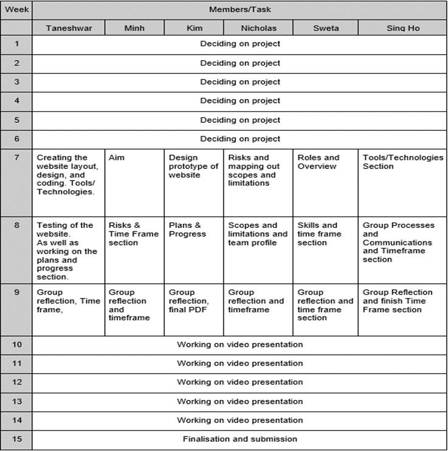

The project will be a user-friendly application to provide current domestic RMIT VCE and tertiary students a transformative experience through the use of an application. PiXel is an application designed to remove student pain points by providing resources and interactive content; promoting engagement within the RMIT community. It will allow student to navigate around campus more conveniently, share their timetable with their peers, virtually interact with classmates via the social hub, chat with team members during class projects and assignments, and through the use of blocks and widgets it will help present the process of enrolling in an easier and engaging way. The application will be a way to get students to interact with the RMIT community more frequently and engage with different clubs and societies to essentially get students to use the app like they use other social networking platforms e.g. Instagram and Facebook.
The reason we chose to do this project is because as we are current students and we found pain points that hindered my process in doing certain things such as limitations of enrolling, finding the right platform to collaborate and interact with fellow peers, having limited knowledge and experience in navigating around RMIT campus, low engagement with student clubs and within the student community, functionality of timetabling and transitioning into university. It fits within current IT trends as collaborative technology is a big part of students lives, especially during this global pandemic. It would show the future employer that Tech Connect is highly engaged and interested in removing student paint points and making it easier for students to interact with one another.
After conducting a thorough competitor analysis we have found that there are many tertiary institutions that have apps for students to access different parts of the institution, and the most similar to PiXel is Victoria University as it is simplistic, has linked resources and games throughout the app. Whereas the University of Melbourne is a very basic app that just shows notices, academic calendar and FAQ’s. A really good competitor app we saw was Deakin University which has something called Genie (similar to Siri) which helps students navigate their way around the app. Another competitor advantage is that Deakin has augmented reality inbuilt into their app which meets another IT trend of AI and AR. Although they have all these features, their interface is not user friendly and looks very much like the VTAC website which could cause some confusion for students and resistance to use the app.
Our aim is to complete our project by Friday and gather all the information and put it into the pdf. So everyone tried to finish their parts by doing research for the sections and finished it up by the scheduled.
Goal: Our goal for the first few weeks is to decide on which project we should work on and after that basing on the project we had a meeting and decided on the part we’re going to work on. From the aim that we had we decided to make the progress on different parts that we have assigned and gathered all the information and put into the pdf. Help our group members with the part that they’re struggling with.
Initial Project Idea
We initially planned to do our group project as a password manager however we decided to change the idea before further developing our third assignment. During assignment 2, we all thought it would be better to choose an existing project idea from one of the members’ first assignments since it would be easier to develop. As a result, we ended up choosing a password manager. However when we started assignment 3, we tried testing a few password managers on our phones to figure out what features we liked, what features or things we didn’t like about them and most importantly what or how we could set the password manager apart from other competitors and from what already exists out there. We felt that there was only limited potential for that project, also we could not identify anything that could have made us stand out in the market therefore we chose to switch to a new project idea.
Changing Ideas
From past assignment feedback, we needed to focus more on what separates our project idea apart from competitors and what makes it original as well as more feasible tangible artifacts that can be produced. Since we struggled to find something new and innovative that would do so, we had to instead choose another idea. Our updated idea for assignment 3 was chosen as the motivation and purpose behind it is quite helpful and interesting but also relevant to ourselves as students and overall had more potential to work on as a project. We had another project idea in mind however it would’ve been harder to develop and produce tangible artifacts for it as we may have needed to get raspberry pis or other hardware to work on it.
We first had to divide assignment 3 into sections and we then designated them to people, trying to have 2-3 members on one part so we can work together more as a team. Some sections however are still designated to one person as everyone is busy with other assignments/other priorities and may not need more than one person to complete. In the previous assignment we had each person on a separate task and then compiled everything together at the end. With this method not every member knew the other sections that they weren’t assigned to and it wasn’t really group work despite it being a group project. Each member has been assigned the following tasks:
Deciding features/pages
An important component of our project was to decide our main features so we can determine the pages we need for our website. The Pixel project will be made as a website including separate pages for each feature as well as making designs for the UI. Due to the timeframe given and technical skills limitation, not all features will be fully developed. We decided the following features that we wished to include and the dedicated pages for them.
Intention behind features:
Project Manager- Project Manager- The project manager revolves around giving students the ability to collaborate on projects that they will be working on throughout their degrees. This project manager will have a UX team dedicated to make it user friendly as projects can be overwhelming especially for first year students. The project manager will allow students to create their own projects and in the future this could be expanded to allow students to share projects with others. Another growth idea for the manager would be to allow users to save all their projects in one place which employers could view when selecting for candidates to fill job openings.
Building Finder- Travelling can be a challenge for some students, especially when it comes to finding the right building and room for classes in the first few weeks. International students may find it difficult as they are not familiar with the transportation systems (trains, trams, buses, etc) if they recently moved to a different country to study. The building finder is targeted to help students become familiar with different routes to their destination as this will prevent them from getting lost in their early weeks of moving. The building finder will also be connected to the timetable of each individual student so that when they open the application, they can easily get directions to their next class with the use of a single button.
Social- Making friends is a crucial part of the university experience and it can be hard for some students so the social hub in PiXel is aimed to provide them with a friendly environment where they can connect with others in the degree and university. The Social Hub will not tolerate any negative behaviour, this is to ensure that every student has a positive experience. The social hub could potentially expand and include a gaming space where students can game with their peers and hangout. There will also be weekly movie nights where a movie will be played and everyone will be invited to join, this is to provide students with entertainment and another opportunity to socialise.
Time Connect- Finding the right time to hang out with friends can be very difficult if you study different courses. The time connect feature will be focused on the timetables and use algorithms to identify what time best suits users to hang out with their friends. This will operate by gaining an understanding of the users by asking questions such as sleep times and preferred days of the week to hangout, etc. The data collected will be used to come up with the best suited times for users by giving them an understanding of their friends free times and preferred times.
Adult 101- Tertiary education can be a challenge for students coming from secondary education. So the adult 101 page is there to help students make a smooth transition from secondary education to tertiary education, it will include articles about time management, importance of sleeping, staying on top of assignments, exercising and many more. The page could include past student experiences which would allow new students to gain a better understanding of what worked for others. This is very crucial as past students have been through it all and are most likely to know the struggles, so their advice will be relevant and helpful.
Designing the website layout:
The website layout was discussed over a teams meeting, in the meeting we discussed all of the necessary information that should be displayed on each individual page and where it should be positioned. We spent a good amount of time on the layout aspect of the website as this is a very important part of any application as the user experience is dependent on it. The easier it is for users to navigate through the application the better their experience is and one of the main goals of PiXel is to improve student experience throughout their time using PiXel. The layout of the application was initially created on the paint application to give an indication of where the navigation menu, logo and content of the website will be. This was going to change during the creation of the website due to limitations on time.
Creating the website:
The website was based on a template because of a limited amount of time due to the change in project idea. We decided to host the website on GitHub as it allows for collaboration, however due to the time constraints we decided to dedicate the website to one person with others helping out to ensure it was completed on time. To develop the website we used Brackets as we felt more familiar and comfortable with it, this was just a decision that we made as a group. There wasn’t much group involvement during the coding part of the website as the main parts such as layout were already discussed in meetings. The website was completed in time and everyone was happy with it, however it was not complete. The website has parts that say under construction indicating that the features aren’t yet complete as there wasn’t enough time. As the website was based off a template, most of the time went into understanding how it worked before changes could be made. The layout of the template website was similar to the one we had decided in our meeting which made it quite easy to finish the website.
Improvements (Under construction):
The under construction sections of the webpage indicate that the functions are not fully ready yet because of the limited time we had. However it does briefly say what the feature is meant to do, this is to give future developers an idea of what the features were initially intended to do.
We have decided on the following roles at Tech Connect:
Although our roles interchange week after week, we have determined that we will share these roles for the majority of the project.
Due to the limited amount of time to work on this project and the current circumstances due to covid, the PiXel web application won't be fully integrated with any of the RMIT servers on campus due to being unable to physically be there to test and ensure full functionality. The mobile application will have to only contain the framework for the social functions, such as the chat, voice and video call. Aside from the previously mentioned limitations, the scope will still contain the features initially described, however, the 'building finder' feature will be unable to be initially implemented fully due to similar reasons as the social features as PiXel must have access to the students timetable to direct them to which building their next class is. Furthermore, many of the designs for PiXel that were created could not be used due to the time constraints as the designs would simply take far too long to implement and therefore the final design was chosen instead.
Softwares or tools we could potentially use for this project are Applery and Datadog. Applery is a cloud-based mobile app developer that can be used to create apps for Android or iOS. Since the builder runs in the cloud, there is nothing to install or download, and it is easy to get in. Datadog is a monitoring, security and analytics platform mobile app developers use, and this will be useful because it would accelerate cyber security and automatically detect threats across dynamic cloud environments which will ensure the safety of students or potential users when interacting with peers and staff members.
Since we are building this project on a website, some hardware needed to achieve this task would be an IDE for Html coding, such as Atom or Brackets which would have been used by members for previous assignments. As well as the use of Github to allow us to collaborate better with each other when working on the website. Github Desktop may also be used to make working with Git easier.
Currently, most of our group members have had experience with using HTML and Github, although the range of experience varies between each individual. Some of us are more familiar with the language than others, but collaboration with each other will prove to be beneficial. However, none of us have had any experience with Applery and Datadog, so we would need to learn how to properly use and implement them before proceeding with this part.
Particularly during this time, we will require the use of Microsoft Teams as a means to communicate with our group via text or audio/video call. It would also be useful to use Trello to organise the whole project. Majority of the members have not used Trello in the past but it is easy to get used to. It will however need to be updated regularly.
The testing of this project could be done in various ways such as getting students to attempt to navigate on the website by themselves and also by getting them to complete specific tasks to see how it takes them. After the website is somewhat functional we can get current students to perform tasks while observing how well they do and how easy it is for them to complete them. The results of this will indicate whether the website design is easy to use, this is important as PiXel is aiming to provide a user friendly environment where users can access everything they will need. There was some testing done by members of the group after the initial design was ready to make sure that everything worked as intended and that navigation was simple. The webpage can be fully tested when some of the features are further developed, this is because it will allow for more accurate results. We could create context scenarios with personas and use them to do user testing, this will give us an understanding of how easy it is to complete main tasks that are predicted to be done regularly by users. To find users we can send out emails to students asking them if they would like to participate in the research. We would roughly need 30-40 users to get a good understanding of how well the website meets the requirements. We could gather these users by asking them through the different clubs run by university students, the process will involve emailing students for participation with potential rewards for participation, advertisements in the different clubs at the university, advertisements on the university website to get future students. Users will be expected to be familiar with using web applications, and as most young people in today's society are comfortable with using technology this shouldn’t be a problem.

Potential Risks:
- New buildings to campuses that may cause issues for the navigation section of the application. Users may complain if not updated quickly enough. This also applies to any construction and temporary changes on campus.
- If the application is not popular then sections of the application will be hindered, mainly the ‘Time Connect’ feature as it would not have access to student timetables. This also applies to the ‘Project Chat’ feature, however as it is aimed at group work then if a group decides to use it then they will all use the application.
- There is a chance for the application to be unavailable for older mobile devices as it will be developed and tested using newer technology, therefore students using older technology may experience difficulties.
Our group's main form of communication is on Microsoft teams and we are currently meeting every Tuesday to discuss any issues or problems we have encountered while working on the assignment. There are also unofficial meetings, for example we would have a video or voice call between various members to collaborate on a specific part of the project, such as discussing and planning the design and Html portion of the task. Since, there is currently a pandemic happening, face to face meetings are not an option for us, so everything will be done online. In the event that a group member does not respond to our video call meeting, we would wait around 5 minutes before proceeding with the session, but if they are consistently missing or ignoring our chat, then an email or other form of communication will be used to try and contact them. If there is still no response then the lecturer or individual in charge of this assignment would be informed of their absence.